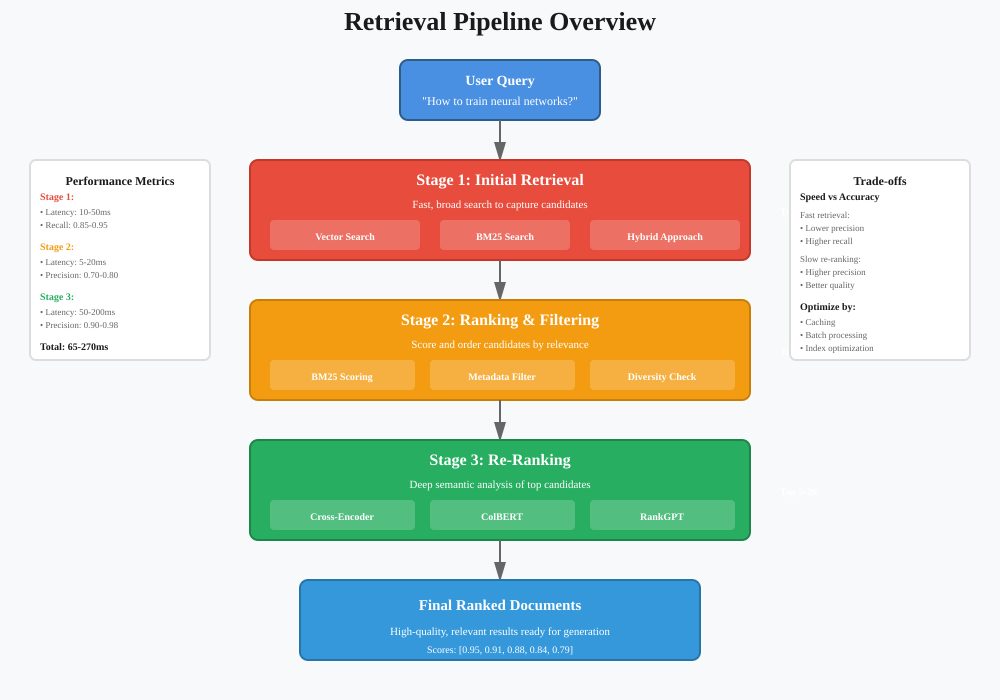
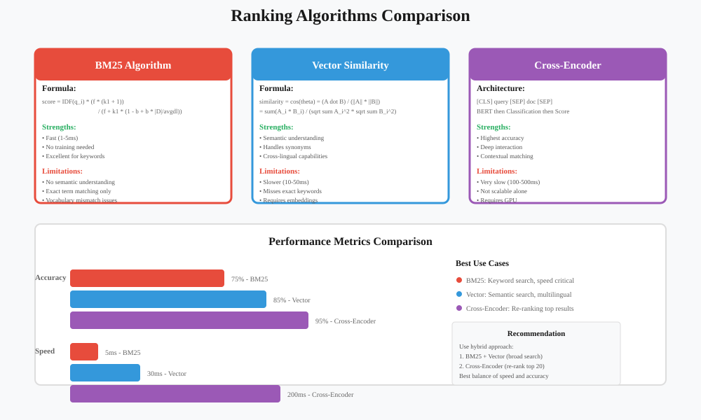
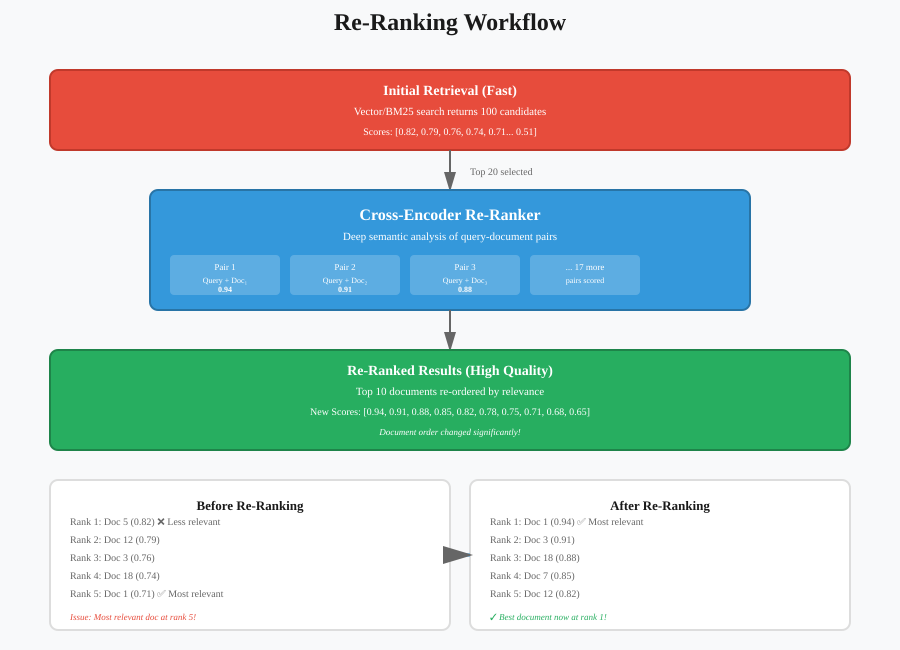
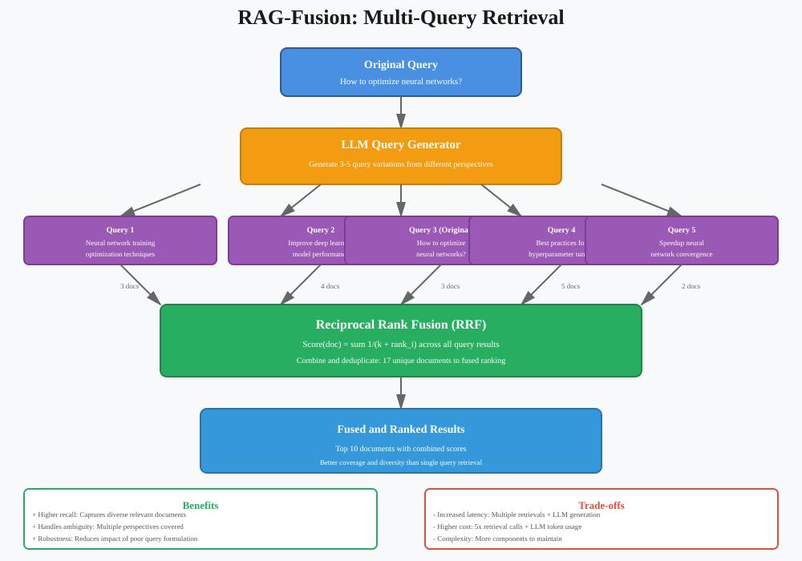
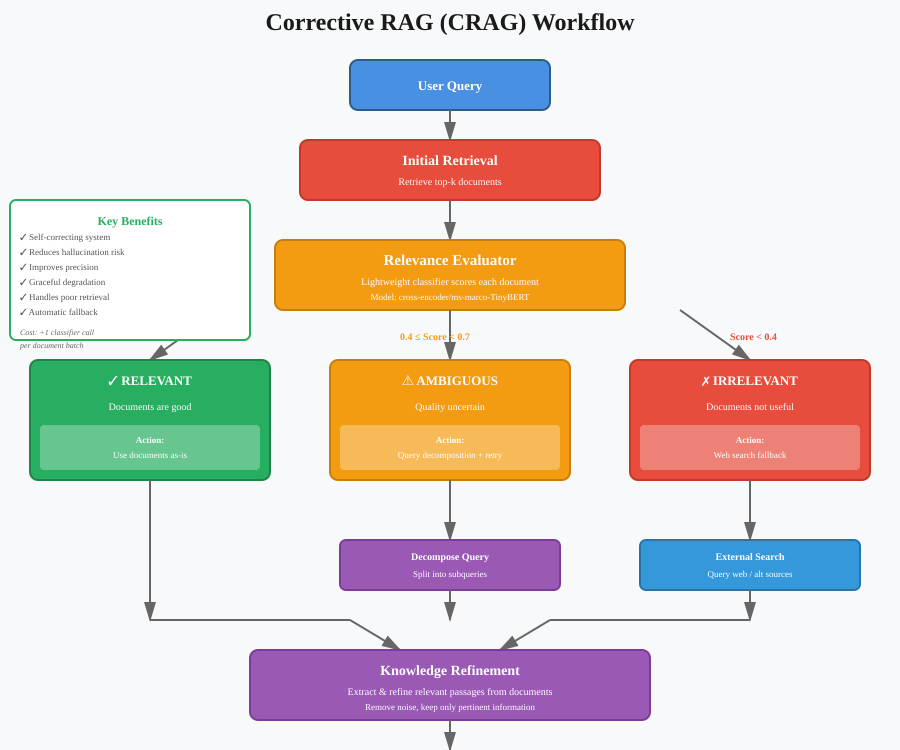
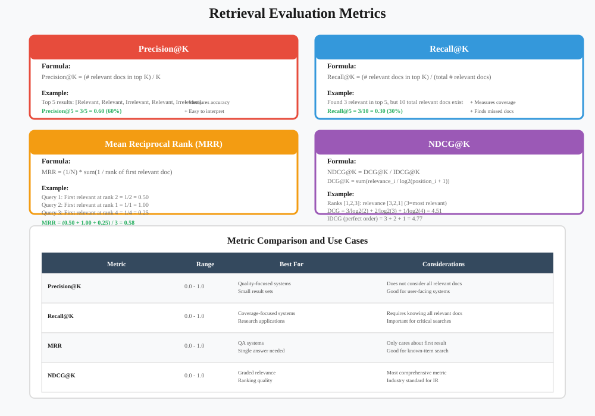
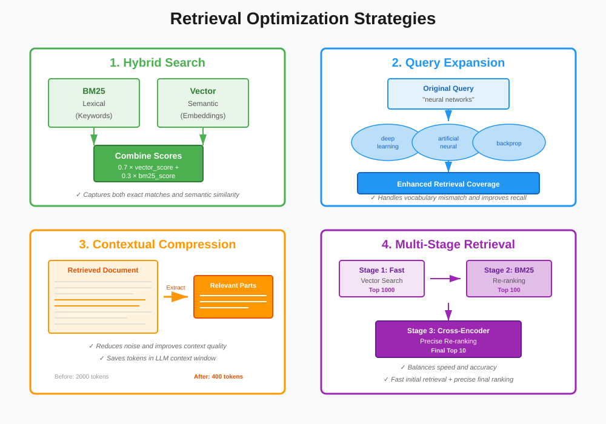

Retrieval Methods: Deep Dive
Advanced Techniques for Finding Relevant Information
📚 Quick Navigation
- Introduction
- Retrieval Pipeline Overview
- Ranking Algorithms
- Re-Ranking Techniques
- RAG-Fusion
- Corrective RAG (CRAG)
- Evaluation Metrics
- Optimization Strategies
- Implementation Examples
- Best Practices
- Common Challenges
- Tools and Libraries
Introduction
Retrieval is the core process of finding and ranking relevant documents from a knowledge base in response to a query. The quality of retrieval directly impacts the final response quality in RAG systems.

Why Retrieval Matters
Effective retrieval ensures: - Relevance: Retrieved documents are actually related to the query - Coverage: All important information is captured - Diversity: Multiple perspectives are considered - Efficiency: Fast retrieval with minimal computational cost - Accuracy: High precision and recall in document selection
Retrieval Pipeline Overview
A typical retrieval pipeline consists of multiple stages:
Stage 1: Initial Retrieval
The first stage casts a wide net to capture potentially relevant documents using fast, approximate methods.
Common approaches: - Vector similarity search (cosine similarity, dot product) - BM25 lexical search - Hybrid retrieval (combining multiple methods)
Stage 2: Ranking
Retrieved documents are scored and ordered by relevance using more sophisticated algorithms.

Ranking methods: - TF-IDF: Term frequency-inverse document frequency - BM25: Best Match 25 algorithm - Cross-encoders: Neural models that score query-document pairs - Learning-to-rank: Machine learning models trained on relevance data
Stage 3: Re-ranking
A more computationally expensive but accurate re-ranking of top candidates.

Ranking Algorithms
BM25 (Best Match 25)
BM25 is a probabilistic ranking function based on the bag-of-words model. It considers term frequency and document length normalization.
Formula:
BM25(D, Q) = Σ IDF(qi) × (f(qi, D) × (k1 + 1)) / (f(qi, D) + k1 × (1 - b + b × |D| / avgdl))
Where:
- f(qi, D): Frequency of term qi in document D
- |D|: Length of document D
- avgdl: Average document length
- k1: Term frequency saturation parameter (typically 1.2-2.0)
- b: Length normalization parameter (typically 0.75)
Strengths: - Fast and efficient - No training required - Effective for keyword-based queries - Well-understood mathematical foundation
Limitations: - Doesn't capture semantic meaning - Relies on exact term matching - Sensitive to vocabulary mismatch
Cross-Encoder Re-Ranking
Cross-encoders jointly encode the query and document to produce a relevance score.
Architecture:
Input: [CLS] query [SEP] document [SEP]
↓
BERT/RoBERTa Encoder
↓
Classification Head
↓
Relevance Score (0-1)
Popular models:
- cross-encoder/ms-marco-MiniLM-L-12-v2
- cross-encoder/ms-marco-electra-base
- cross-encoder/qnli-distilroberta-base
Implementation:
from sentence_transformers import CrossEncoder
# Initialize cross-encoder
model = CrossEncoder('cross-encoder/ms-marco-MiniLM-L-12-v2')
# Score query-document pairs
scores = model.predict([
("What is machine learning?", doc1),
("What is machine learning?", doc2),
("What is machine learning?", doc3)
])
# Re-rank by score
ranked_docs = [doc for _, doc in sorted(zip(scores, docs), reverse=True)]
Re-Ranking Techniques
Re-ranking refines initial retrieval results using more sophisticated models.
Types of Re-Rankers
- Cross-Encoder Re-Rankers
- Most accurate but slowest
- Joint encoding of query and document
-
Best for top-k refinement (k=10-100)
-
ColBERT (Contextualized Late Interaction)
- Balance between speed and accuracy
- Late interaction between query and document embeddings
-
Faster than cross-encoders
-
RankGPT
- Uses LLMs (GPT-4, Claude) for re-ranking
- Provides explanations for ranking decisions
- High quality but expensive
RankGPT Implementation
RankGPT uses LLMs to re-rank retrieved documents by analyzing their relevance.
Process:
def rankgpt_rerank(query, documents, model="gpt-4"):
"""Re-rank documents using GPT-4"""
# Create ranking prompt
docs_text = "\n\n".join([
f"[{i+1}] {doc[:200]}..."
for i, doc in enumerate(documents)
])
prompt = f"""Given the query: "{query}"
Rank the following documents by relevance (most relevant first).
Return only the document numbers in order.
{docs_text}
Ranking (comma-separated numbers):"""
# Get LLM ranking
response = openai.ChatCompletion.create(
model=model,
messages=[{"role": "user", "content": prompt}],
temperature=0
)
# Parse ranking
ranking = [int(x.strip())-1 for x in response.choices[0].message.content.split(",")]
return [documents[i] for i in ranking]
RAG-Fusion
RAG-Fusion generates multiple query variations and combines their retrieval results for better coverage.

How RAG-Fusion Works
Step 1: Query Generation Generate multiple variations of the original query:
original_query = "How to optimize neural networks?"
generated_queries = [
"What are neural network optimization techniques?",
"Best practices for training neural networks",
"Methods to improve neural network performance",
"Neural network hyperparameter tuning strategies"
]
Step 2: Parallel Retrieval Retrieve documents for each query variant independently.
Step 3: Reciprocal Rank Fusion Combine results using reciprocal rank fusion (RRF):
def reciprocal_rank_fusion(results_list, k=60):
"""
Combine multiple ranked lists using RRF
Args:
results_list: List of ranked document lists
k: Constant for RRF formula
Returns:
Combined ranked list
"""
fused_scores = {}
for results in results_list:
for rank, doc in enumerate(results):
doc_id = doc['id']
if doc_id not in fused_scores:
fused_scores[doc_id] = 0
# RRF formula
fused_scores[doc_id] += 1 / (k + rank + 1)
# Sort by fused score
ranked = sorted(fused_scores.items(), key=lambda x: x[1], reverse=True)
return ranked
Benefits: - Better coverage of relevant documents - Handles query ambiguity - Reduces impact of poor query formulation - Improves recall
Trade-offs: - Increased latency (multiple retrievals) - Higher computational cost - More complex pipeline
Corrective RAG (CRAG)
CRAG adds a self-correction mechanism to verify and improve retrieval quality.

CRAG Process
Step 1: Initial Retrieval Retrieve documents using standard methods.
Step 2: Relevance Evaluation Use a lightweight classifier to assess document relevance:
def evaluate_relevance(query, document, threshold=0.7):
"""Evaluate if document is relevant to query"""
# Use a small classifier model
relevance_model = CrossEncoder('cross-encoder/ms-marco-TinyBERT-L-2-v2')
score = relevance_model.predict([(query, document)])
if score > threshold:
return "RELEVANT"
elif score > 0.4:
return "AMBIGUOUS"
else:
return "IRRELEVANT"
Step 3: Corrective Actions
Based on evaluation: - RELEVANT: Use documents as-is - AMBIGUOUS: Decompose query and retrieve again - IRRELEVANT: Trigger web search or fallback strategy
Step 4: Knowledge Refinement Extract and refine relevant knowledge from documents:
def refine_knowledge(documents, query):
"""Extract relevant parts from documents"""
refined_chunks = []
for doc in documents:
# Extract relevant sentences
sentences = sent_tokenize(doc)
relevant_sentences = [
s for s in sentences
if is_relevant(query, s)
]
refined_chunks.extend(relevant_sentences)
return refined_chunks
Benefits: - Self-correcting mechanism - Reduces hallucination - Improves precision - Handles poor retrieval gracefully
Evaluation Metrics

Core Metrics
1. Precision@K Proportion of relevant documents in top K results:
Precision@K = (# relevant docs in top K) / K
2. Recall@K Proportion of all relevant documents found in top K:
Recall@K = (# relevant docs in top K) / (total # relevant docs)
3. Mean Reciprocal Rank (MRR) Average of reciprocal ranks of first relevant document:
MRR = (1/N) × Σ(1 / rank_i)
4. Normalized Discounted Cumulative Gain (NDCG) Measures ranking quality considering position:
NDCG@K = DCG@K / IDCG@K
DCG@K = Σ(rel_i / log2(i+1))
Implementation
def evaluate_retrieval(queries, retrieved_docs, relevant_docs):
"""Comprehensive retrieval evaluation"""
metrics = {
'precision@5': [],
'recall@10': [],
'mrr': [],
'ndcg@10': []
}
for query, retrieved, relevant in zip(queries, retrieved_docs, relevant_docs):
# Precision@5
relevant_in_top5 = sum(1 for doc in retrieved[:5] if doc in relevant)
metrics['precision@5'].append(relevant_in_top5 / 5)
# Recall@10
relevant_in_top10 = sum(1 for doc in retrieved[:10] if doc in relevant)
metrics['recall@10'].append(relevant_in_top10 / len(relevant))
# MRR
for i, doc in enumerate(retrieved):
if doc in relevant:
metrics['mrr'].append(1 / (i + 1))
break
else:
metrics['mrr'].append(0)
# NDCG@10
dcg = sum(
(1 if retrieved[i] in relevant else 0) / np.log2(i + 2)
for i in range(min(10, len(retrieved)))
)
idcg = sum(1 / np.log2(i + 2) for i in range(min(10, len(relevant))))
metrics['ndcg@10'].append(dcg / idcg if idcg > 0 else 0)
# Average metrics
return {k: np.mean(v) for k, v in metrics.items()}
Optimization Strategies

1. Hybrid Search
Combine lexical (BM25) and semantic (vector) search:
def hybrid_search(query, bm25_weight=0.3, vector_weight=0.7):
"""Combine BM25 and vector search"""
# BM25 retrieval
bm25_results = bm25_index.search(query, top_k=20)
# Vector retrieval
query_embedding = encoder.encode(query)
vector_results = vector_index.search(query_embedding, top_k=20)
# Combine scores
combined_scores = {}
for doc_id, score in bm25_results:
combined_scores[doc_id] = bm25_weight * score
for doc_id, score in vector_results:
if doc_id in combined_scores:
combined_scores[doc_id] += vector_weight * score
else:
combined_scores[doc_id] = vector_weight * score
# Return sorted results
return sorted(combined_scores.items(), key=lambda x: x[1], reverse=True)
2. Query Expansion
Expand queries with synonyms and related terms:
def expand_query(query, model="word2vec"):
"""Expand query with related terms"""
expanded_terms = set(query.split())
for term in query.split():
# Get similar terms
similar = model.most_similar(term, topn=3)
expanded_terms.update([s[0] for s in similar])
return " ".join(expanded_terms)
3. Contextual Compression
Extract only relevant parts of retrieved documents:
from langchain.retrievers import ContextualCompressionRetriever
from langchain.retrievers.document_compressors import LLMChainExtractor
# Create compressor
compressor = LLMChainExtractor.from_llm(llm)
# Wrap base retriever
compression_retriever = ContextualCompressionRetriever(
base_compressor=compressor,
base_retriever=base_retriever
)
# Retrieve with compression
compressed_docs = compression_retriever.get_relevant_documents(query)
4. Multi-Stage Retrieval
Use fast initial retrieval followed by expensive re-ranking:
def multistage_retrieval(query, stages=3):
"""Multi-stage retrieval pipeline"""
# Stage 1: Fast vector search (top 1000)
candidates = vector_index.search(query, top_k=1000)
# Stage 2: BM25 re-ranking (top 100)
reranked = bm25_rerank(query, candidates, top_k=100)
# Stage 3: Cross-encoder (top 10)
final = cross_encoder_rerank(query, reranked, top_k=10)
return final
Implementation Examples
Complete Retrieval Pipeline
from typing import List, Dict
import numpy as np
from sentence_transformers import SentenceTransformer, CrossEncoder
from rank_bm25 import BM25Okapi
class AdvancedRetriever:
def __init__(self):
self.encoder = SentenceTransformer('all-MiniLM-L6-v2')
self.reranker = CrossEncoder('cross-encoder/ms-marco-MiniLM-L-6-v2')
self.documents = []
self.doc_embeddings = None
self.bm25 = None
def index_documents(self, documents: List[str]):
"""Index documents for retrieval"""
self.documents = documents
# Create vector index
self.doc_embeddings = self.encoder.encode(documents)
# Create BM25 index
tokenized_docs = [doc.split() for doc in documents]
self.bm25 = BM25Okapi(tokenized_docs)
def retrieve(self, query: str, top_k: int = 10) -> List[Dict]:
"""
Multi-stage retrieval with hybrid search and re-ranking
"""
# Stage 1: Hybrid retrieval (top 100)
candidates = self._hybrid_search(query, top_k=100)
# Stage 2: Cross-encoder re-ranking (top k)
final_results = self._rerank(query, candidates, top_k=top_k)
return final_results
def _hybrid_search(self, query: str, top_k: int) -> List[str]:
"""Combine vector and BM25 search"""
# Vector search
query_embedding = self.encoder.encode([query])[0]
vector_scores = np.dot(self.doc_embeddings, query_embedding)
# BM25 search
bm25_scores = self.bm25.get_scores(query.split())
# Normalize and combine
vector_scores = (vector_scores - vector_scores.min()) / (vector_scores.max() - vector_scores.min())
bm25_scores = (bm25_scores - bm25_scores.min()) / (bm25_scores.max() - bm25_scores.min())
combined_scores = 0.7 * vector_scores + 0.3 * bm25_scores
# Get top-k indices
top_indices = np.argsort(combined_scores)[-top_k:][::-1]
return [self.documents[i] for i in top_indices]
def _rerank(self, query: str, documents: List[str], top_k: int) -> List[Dict]:
"""Re-rank using cross-encoder"""
# Score all query-document pairs
pairs = [[query, doc] for doc in documents]
scores = self.reranker.predict(pairs)
# Sort by score
doc_scores = list(zip(documents, scores))
doc_scores.sort(key=lambda x: x[1], reverse=True)
# Return top-k with metadata
return [
{
'document': doc,
'score': float(score),
'rank': i + 1
}
for i, (doc, score) in enumerate(doc_scores[:top_k])
]
# Usage
retriever = AdvancedRetriever()
retriever.index_documents(documents)
results = retriever.retrieve(
query="How do neural networks learn?",
top_k=5
)
for result in results:
print(f"Rank {result['rank']}: {result['score']:.3f}")
print(f"{result['document'][:100]}...\n")
Best Practices
DO ✅
- Use Hybrid Search: Combine lexical and semantic methods
- Implement Re-Ranking: Add a cross-encoder stage for top results
- Monitor Latency: Balance accuracy with speed requirements
- Evaluate Regularly: Track precision, recall, and NDCG
- Handle Edge Cases: Plan for no results or low confidence
- Use Query Expansion: Add related terms for better recall
- Chunk Appropriately: Optimize document chunk size
- Cache Results: Cache frequent queries
- A/B Test: Compare retrieval strategies
- Log Everything: Track queries, results, and user feedback
DON'T ❌
- Don't Rely Only on Embeddings: Semantic search misses exact matches
- Don't Skip Evaluation: Test on real queries
- Don't Ignore Speed: Users need fast responses
- Don't Over-Retrieve: More results ≠ better quality
- Don't Forget Context: Use conversation history
- Don't Ignore Metadata: Filters improve relevance
- Don't Use Single Method: Hybrid approaches work better
- Don't Skip Re-Ranking: Initial retrieval is often noisy
- Don't Ignore Diversity: Avoid redundant results
- Don't Forget Updates: Keep indexes fresh
Common Challenges
Challenge 1: Vocabulary Mismatch
Problem: User queries use different terms than documents
Solutions: - Query expansion with synonyms - Use semantic embeddings - Implement query reformulation - Add domain-specific vocabulary
Challenge 2: Multi-Intent Queries
Problem: Query contains multiple intents
Solutions: - Query decomposition - RAG-Fusion approach - Multi-vector representation - Intent classification
Challenge 3: Low Recall
Problem: Missing relevant documents
Solutions: - Increase initial retrieval size - Use multiple retrieval methods - Implement query expansion - Reduce embedding dimensionality
Challenge 4: High Latency
Problem: Retrieval takes too long
Solutions: - Use approximate nearest neighbor (ANN) - Implement caching - Optimize index structure - Reduce re-ranking candidates
Challenge 5: Poor Ranking Quality
Problem: Irrelevant documents ranked highly
Solutions: - Add cross-encoder re-ranking - Fine-tune ranking models - Use learning-to-rank - Implement CRAG corrections
Tools and Libraries
Vector Stores
- Pinecone: Managed vector database
- Weaviate: Open-source vector search engine
- Milvus: Scalable vector database
- Qdrant: Vector similarity search engine
- Chroma: Lightweight embedding database
- FAISS: Facebook AI similarity search
Retrieval Frameworks
- LangChain: Complete RAG framework
- LlamaIndex: Data framework for LLMs
- Haystack: NLP framework with retrieval
- txtai: Semantic search and workflows
Re-Ranking Models
- Cross-Encoder: Sentence-transformers cross-encoders
- ColBERT: Late interaction retrieval
- MonoT5: T5-based re-ranker
- RankGPT: LLM-based re-ranking
Evaluation Tools
- BEIR: Benchmark for information retrieval
- TREC: Text REtrieval Conference datasets
- MS MARCO: Microsoft machine reading comprehension
- Natural Questions: Google's QA dataset
Additional Resources
Research Papers
- "Dense Passage Retrieval" (Karpukhin et al., 2020)
- "Retrieve-Rerank-Generate" (Glass et al., 2022)
- "ColBERT: Efficient and Effective Passage Search" (Khattab & Zaharia, 2020)
- "Corrective Retrieval Augmented Generation" (Yan et al., 2024)